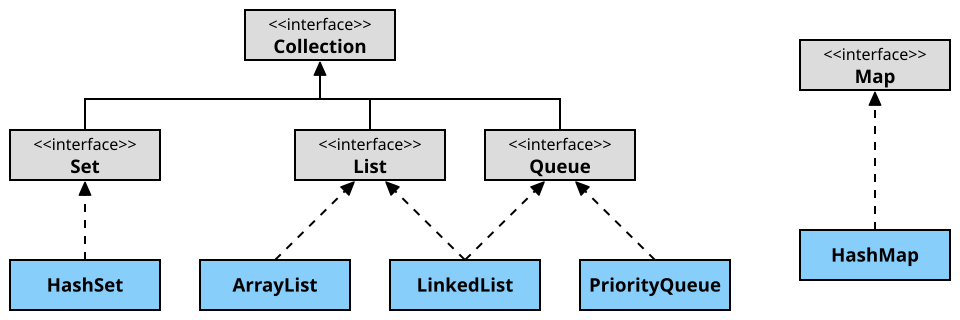

Col·leccions
Les col·lecions serveixen per guardar un conjunt de dades, habitualment del mateix tipus.
Cada una de les classes que implementen la interfície Collection i derivades tenen alguna utilitat especial.
Les classes que implementen la interfície Map són una mica diferents però són molt útils quan s'han d'emmagatzemar dades identificades amb una clau (similar a utilitzar un índex en una taula d'una BD).

HashSet
HashSet (W3Schools)
HashSet ref. (Java SE 17)
Serveix per emmagatzemar objectes no repetits.
Pot contenir un objecte nul com a màxim.
Algunes de les operacions que es poden fer són:
- add(e): afegeix un element, si no hi és.
- remove(o): elimina l'objecte, si hi és.
- clear(): elimina tots els elements.
- contains(o): comprova si conté l'objecte.
- isEmpty(): comprova si no conté cap element.
- size(): obté el nombre d'elements que conté.
- toArray(): retorna un array amb tots els objectes.
Aquests mètodes són comuns a totes les classes que implementen Collection.
ArrayList
ArrayList (W3Schools)
ArrayList ref. (Java SE 17)
És similar a un array (permet accedir a un element en una posició determinada) però pot crèixer a mida que es van afegint elements.
També es pot accedir als seus elements de forma seqüencial utilitzant un iterador.
Permet emmagatzemar objectes repetits i nulls.
Afegir i eliminar elements (especialment entre altres elements) és més costós que amb LinkedList.
A part de les operacions típiques de les col·leccions, es poden utilitzar les següents:
- add(ndx,e): insereix un elementen la posició ndx.
- set(ndx,e): canvia l'element de la posició ndx per l'elementen e.
- get(ndx): retorna l'element que es troba en la posició ndx.
- indexOf(e): retorna la primera posició en què es troba l'element e.
LinkedList
LinkedList (W3Schools)
LinkedList ref. (Java SE 17)
Similar a ArrayList però algunes operacions són més ràpides i altres més lentes:
- Operacions més ràpides: afegir, consultar o eliminar elements, especialment utilitzant un ListIterator.
- Operacions més lentes: obtenir o modificar un objecte en una posició determinada.
Implementa les interfícies List i Queue (de fet, implementa Deque, que permet afegir i eliminar elements tant al principi com al final de la cua).
Algunes operacions especials d'aquesta classe són:
- addFirst(e): afegeix l'element al principi de la llista.
- addLast(e): afegeix l'element al final de la llista.
- add(e): afegeix l'element al final de la llista.
- getFirst(): retorna el primer element de la llista.
- getLast(): retorna l'últim element de la llista.
- get(ndx): retorna l'element de la posició ndx.
- removeFirst(): retorna i elimina el primer element de la llista (genera excepció si llista buida).
- removeLast(): retorna i elimina l'últim element de la llista (genera excepció si llista buida).
- remove(ndx): retorna i elimina l'element de la posició ndx (genera excepció si llista buida).
Les comandes peekXXX() i pollXXX() són similars a removeXXX() però no generen excepcions.
PriorityQueue
PriorityQueue (W3Schools)
PriorityQueue ref. (Java SE 17)
És similar a una llista però els elements s'afegeixen automàticament en una posició que ve determinada per un Comparator que decideix si un element ha d'anar abans o després d'un altre.
Els elements es poden consultar i/o treure del principi de la llista amb les següents instruccions:
- peek(): retorna el primer element de la llista (o null si està buida).
- poll(): retorna i elimina el primer element de la llista (retorna null si està buida).
HashMap
HashMap (W3Schools)
HashMap ref. (Java SE 17)
És similar a un diccionari: serveix per emmagatzemar objectes identificats per una clau.
Totes les claus han de ser diferents i només pot haver-hi una que sigui nul·la.
En canvi, els objectes de les diferents claus sí que poden ser nuls o estar repetits.
- put(key,value): afegeix una clau i l'element associat.
- get(key): obté l'element associat a la clau.
- remove(key): elimina la clau i l'element associat.
- clear(): elimina totes les claus i els elements associats.
- containsKey(key): comprova si existeix la clau.
- containsValue(value): comprova si existeix l'objecte.
- isEmpty(): comprova si no conté cap element.
- size(): obté el nombre d'elements que conté.
- keySet(): retorna un Set amb les claus del HashMap.
- values(): retorna un Set amb els elements del HashMap.
Iteradors
Iterator (W3Schools)
Iterator ref. (Java SE 17)
ListIterator ref. (Java SE 17)
Els iteradors són objectes que serveixen per recórrer els elements d'una col·lecció.
Les col·leccions tenen el mètode iterator() per obtenir un iterador per recórrer les dades.
Són especialment eficients amb les llistes enllaçades i les cues.
Iterator només permet recórrer la llista des del principi fins al final.
- hasNext(): per saber si hi un element a continuació de la posició actual.
- next(): obté el següent element i avança la posició actual.
- remove(): elimina l'element retornat per next().
ListIterator hereta de Iterator i permet recórrer la llista en totes dues direccions.
A més de les operacions anteriors també pot fer:
- hasPrevious(): per saber si hi un element abans de la posició actual.
- previous(): obté l'element anterior i retrocedeix una posició.
- set(e): modifica l'element retornat per next() o per previous().
- add(e): afegeix un element abans de l'element retornat per next() o després de l'element retornat per previous().
Comparadors
Quan es necessita tenir un conjunt de dades ordenat o si s'ha de poder saber si un element és més gran, més petit o igual que un altre, cal implementar algun comparador.
Classes com TreeSet o TreeMap necessiten un comparador per mantenir ordenats els seus elements.
Un dels constructors d'aquestes classes inclou un paràmetre de tipus Comparator.
Comparable només té un mètode:
- compareTo(o): retorna un enter que indica si l'element que crida el mètode és més petit (-1), més gran (+1) o igual (0) que l'element que se li passa al mètode.
Comparator també permet comparar dos elements passats com a paràmetres o decidir directament si dos elements són iguals o no:
- compare(o1, o2): retorna un enter que indica si l'element que crida el mètode és més petit (-1), més gran (+1) o igual (0) que l'element que se li passa al mètode.
- equals(o): retorna un enter que indica si l'element que crida el mètode és més petit (-1), més gran (+1) o igual (0) que l'element que se li passa al mètode.
Comparator NO deriva de Comparable!
Altres estructures que utilitzen col·leccions
Piles
Stack ref. (Java SE 17)
Eliminar Stack (es pot implementar amb LinkedList o ArrayDeque) !!!
Una pila és un conjunt de dades seqüencials (semblant a una llista).
Quan s'afegeix una dada, es posa al damunt de la pila.
Quan es treu una dada, es treu la de sobre de la pila.
Aquestes estructures també s'anomenen LIFO (Last In, First Out) o FILO (First In, Last Out).
Les piles tenen dues operacions bàsiques:
- push(Element): afegeix l'element al damunt de la pila.
- pop(): treu (i retorna) l'element de sobre de la pila (genera EmptyStackException si la pila està buida).
Altres mètodes útils són:
- peek(): retorna l'element de sobre de la pila però no l'elimina.
- empty(): retorna true si la pila està buida.
Cues
Interface Queue ref. (Java SE 17)
(es pot implementar amb ArrayDeque) ???
Una cua és un conjunt de dades seqüencials (semblant a una llista).
Quan s'afegeix una dada, es posa al final de la llista.
Quan es treu una dada, es treu la primera de la llista.
Aquestes estructures també s'anomenen FIFO (First In, First Out).
Al ser una interfície, no es poden instanciar objectes directament ni crear classes "filles".
Es pot implementar una cua fent que una llista implementi les operacions de la interfície Queue.
La forma més eficient d'implementar una cua és a través d'una LinkedList:
Queue<String> cua = new LinkedList<> ();
Les cues han d'implementar les següents operacions:
- add(Element): afegeix l'element al final de la cua (genera IllegalStateException si no hi ha prou espai).
- offer(Element): afegeix l'element al final de la cua.
- remove(): treu (i retorna) el primer element (genera NoSuchElementException si la cua està buida).
- poll(): treu (i retorna) el primer element (o null si la cua està buida).
Altres mètodes útils són:
- peek(): retorna el primer element (o null si la cua està buida).
- isEmpty(): retorna true si la cua està buida.
Altres classes per gestionar col·leccions
Les següents classes contenen mètodes estàtics per facilitar algunes operacions amb arrays i col·leccions.
Arrays
La majoria dels següents mètodes tenen versions per diferents tipus de dades: char, int, float...
- asList(...): retorna una llista amb els elements de l'array.
- equals(arrayA, arrayB): retorna true o false per indicar si tots els elements dels dos arrays són iguals o no.
- compare(arrayA, arrayB): retorna un enter que indica si el primer array és més petit (-1), més gran (+1) o igual (0) que el segon array.
Per decidir-ho, compara els valors un a un fins que troba dos que són diferents.
La comparació d'aquests valors és el què determina l'ordre.
- fill(array,valor): omple tots els elements de l'array amb el valor especificat.
Si la mida és inferior, elimina els elements sobrants; si és superior, afegeix elements buits (0 o null).
- copyOf(array,mida): retorna un array que és una còpia d'un altre.
Si la mida és inferior, elimina els elements sobrants; si és superior, afegeix elements buits (0 o null).
- copyOfRange(array,ndx1,ndx2): similar a l'anterior però només copia els elements entre ndx1 i ndx2 (l'element en la posició ndx2 no s'inclou).
Si la mida és inferior, elimina els elements sobrants; si és superior, afegeix elements buits (0 o null).
- sort(array): ordena els elements de l'array de menor a major.
- sort(array,ndx1,ndx2): similar a l'anterior però només ordena els elements entre ndx1 i ndx2 (l'element en la posició ndx2 no s'inclou).
- toString(array): retorna un String amb els elements separats per , i tancat entre [ i ].
Collections
A més de les següents operacions, també es poden intercanviar elements, invertir una llista, fer rotacions...
- addAll(collection, ...): afegeix els elements a la col·lecció.
- copy(list1,list2): copia (modifica) els elements d'una llista a una altra.
Si la segona és més gran, els últims elements no queden afectats.
Si la segona és més petita, acabarà siguent igual que la primera.
- fill(list,e): substitueix tots els elements per l'element e.
- max(collection): retorna l'element més gran.
- min(collection): retorna l'element més petit.
- sort(list,comparator): ordena la llista utilitzant el comparador especificat.